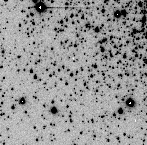
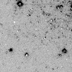
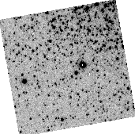
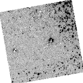
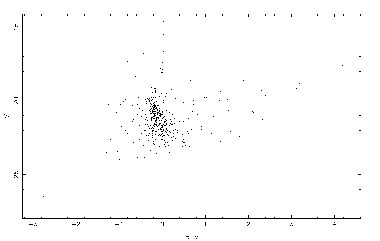

These are run by the starmandemo program (actually a C shell script). On entering this program you have the choice of four separate demonstrations.
Go to Starman Help Main.
This script will take an image of a star field and automatically find the stars, measure their PSFs, and measure the stars.
 produces a cleaned image 
The image is in file $STARMAN_ DATA/stars_ v.sdf. This is copied into the present directory.
A number of files called temp_ * are created and destroyed when running this demonstration.
Files prof_ XXX1.sdf, mag_ XXX1.sdf, clean_ XXX1.sdf are created where XXX1 is the name of the input file, and the prof_ files conatin the profile (in Starman terms), the mag_ files contains Starman tables with the results, and the clean_ files contain copies of the cleaned images.
Use tblist and tbsheet to look at the tables, imflash and interact to look at the images.
Instructions undertaken:-
echo "Starting - copying image from Starman test data directory"
cp $STARMAN_DATA/stars_v.sdf ./stars_v.sdf
echo "Doing starfind - to find all stars"
starfind stars_v radius=2 out=temp_xy_1 \\
echo "Doing tbsort - to sort with bright ones first"
tbsort temp_xy_1 numcol=3 option='descending' out=temp_xy_1_a \\
echo "Doing tbcut - to get brightest stars"
tbcut temp_xy_1_a col_1=\[1,6\] row_1=\[1,8\] out=temp_xy_1_b \\
echo "Doing profile - to determine stellar point-spread-function"
profile $file1 instars=temp_xy_1_b use='auto' out=prof_$file1 \\
echo "Doing measure - to measure magnitudes of all stars"
measure $file1 instars=temp_xy_1_a profile=prof_$file1 \
out=mag_$file1 outim=clean_$file1 \\
rm temp_xy_1.sdf temp_xy_1_a.sdf temp_xy_1_b.sdf
This script will take two images (non-aligned) of a star field and automatically find the stars, work out the transformation between the images, measure their PSFs, measure the stars, and display a colour/magnitude diagram.
produces a cleaned image
 produces a cleaned image 
The star measures on these two produce a colour-magnitude diagram:-

The two images are in files $STARMAN_ DATA/stars_ v.sdf and $STARMAN_ DATA/stars_ r_ rotated.sdf. These are copied into the present directory.
A number of files called temp_ * are created and destroyed" when running this demonstration."
Files prof_ XXX1.sdf, mag_ XXX1.sdf, clean_ XXX1.sdf, prof_ XXX2.sdf, mag_ XXX2.sdf, clean_ XXX2.sdf, are created.
where XXX1 and XXX2 are the names of the input files, and the prof_ files conatin the profile (in Starman terms), the mag_ files contains Starman tables with the results, and the clean_ files contain copies of the cleaned images.
Use tblist, tbsheet and diagram to look at the tables, imflash and interact to look at the images.
echo "Starting - copying images from Starman test data directory"
cp $STARMAN_DATA/stars_ v.sdf ./stars_v.sdf
cp $STARMAN_DATA/stars_ r_rotated.sdf ./stars_r_rotated.sdf
echo "Doing starfind - to find all stars"
starfind stars_v radius=2 out=temp_xy_1 \\
echo "Doing tbsort - to sort with bright ones first"
tbsort temp_xy_1 numcol=3 option='descending' out=temp_xy_1_a \\
echo "Doing tbcut - to get brightest stars"
tbcut temp_xy_1_a col_1=\[1,6\] row_1=\[1,8\] out=temp_xy_1_b \\
echo "Doing profile - to determine stellar point-spread-function"
profile stars_v instars=temp_xy_1_b use='auto' out=prof_stars_v \\
echo "Doing measure - to measure magnitudes of all stars"
measure stars_v instars=temp_xy_1_a profile=prof_stars_v \
out=mag_stars_v outim=clean_stars_v \\
echo "Doing starfind on 2nd image - to get stars for profile "
starfind stars_r_rotated radius=2 out=temp_xy_2 \\
echo "Doing tbsort on 2nd image - to sort with bright ones first"
tbsort temp_xy_2 numcol=3 option='descending' out=temp_xy_2_a \\
echo "Doing tbcut on 2nd image - to get brightest stars"
tbcut temp_xy_2_a col_1=\[1,6\] row_1=\[1,8\] out=temp_xy_2_b \\
echo "Doing profile on 2nd image - to determine stellar point-spread-function"
profile stars_r_rotated instars=temp_xy_2_b use='auto' \
out=prof_stars_r_rotated \\
echo "doing tbtran_auto - to get 1st star list on 2nd image"
tbtran_auto mag_stars_v temp_xy_2_c temp_xy_2_a \\
echo "Doing measure on 2nd image - to measure magnitudes of all stars"
measure stars_r_rotated instars=temp_xy_2_c profile=prof_stars_r_rotated \
out=mag_stars_r_rotated outim=clean_stars_r_rotated \\
echo "Doing diagram - to display colour/magnitude diagram"
diagram easycmd='yes' in2=mag_stars_r_rotated in3=mag_stars_v exit='yes' \\
echo "DONE DIAGRAM - deleting temporary files "
rm temp_xy_2.sdf temp_xy_2_a.sdf temp_xy_2_b.sdf temp_xy_2_c.sdf
rm temp_xy_1.sdf temp_xy_1_a.sdf temp_xy_1_b.sdf temp_xy_1_c.sdf